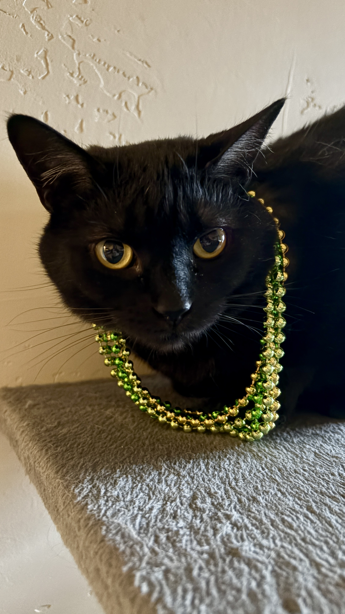
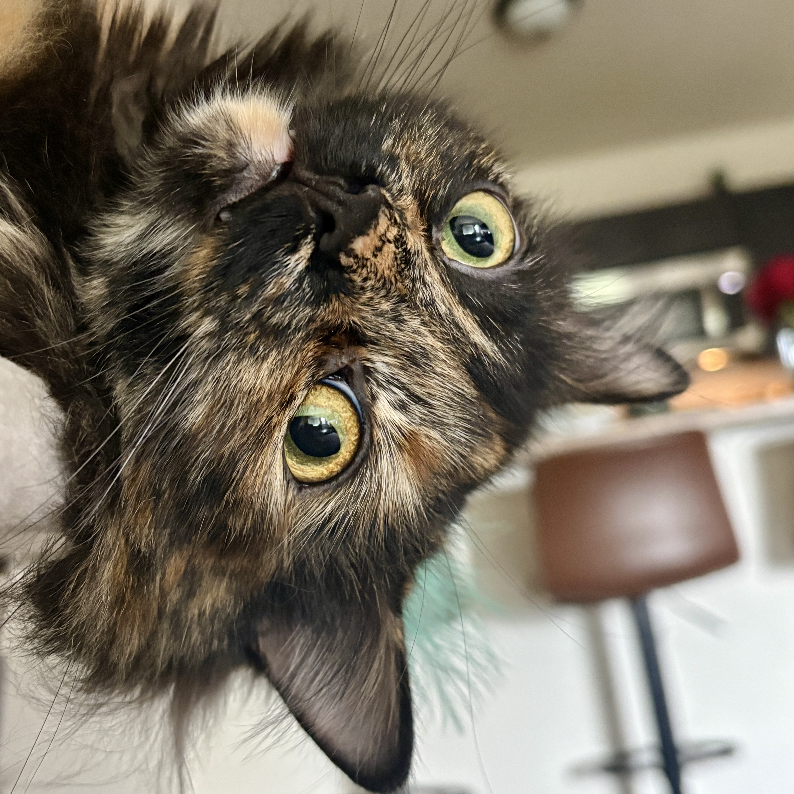
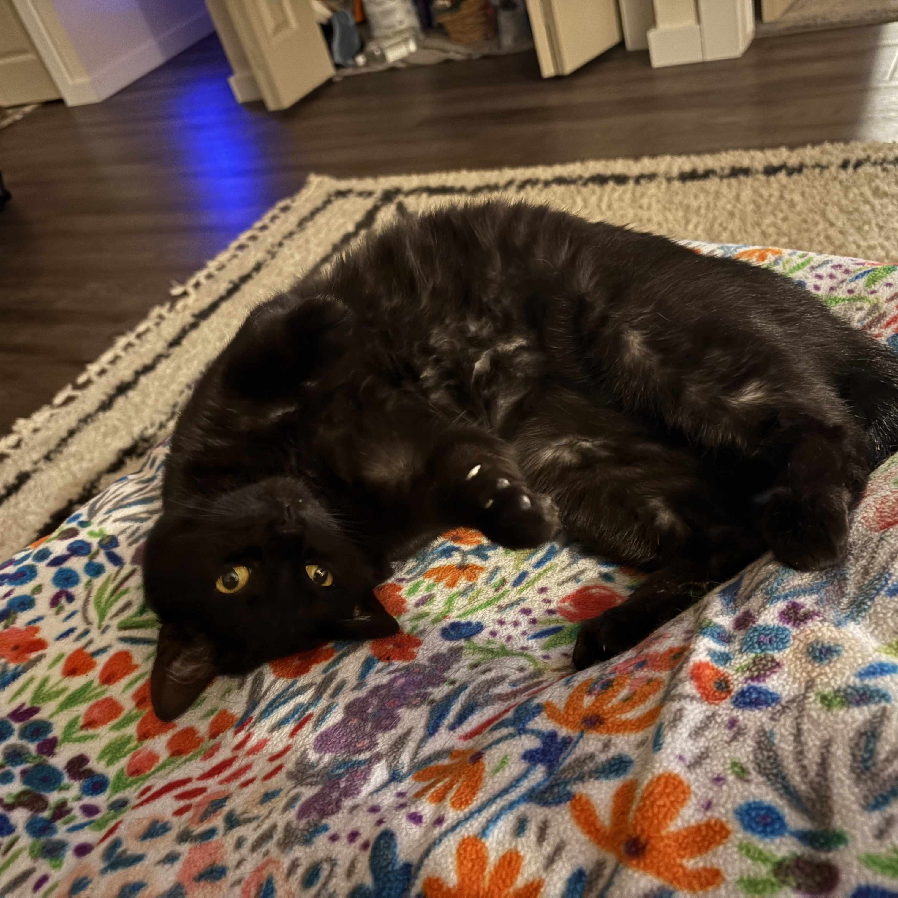
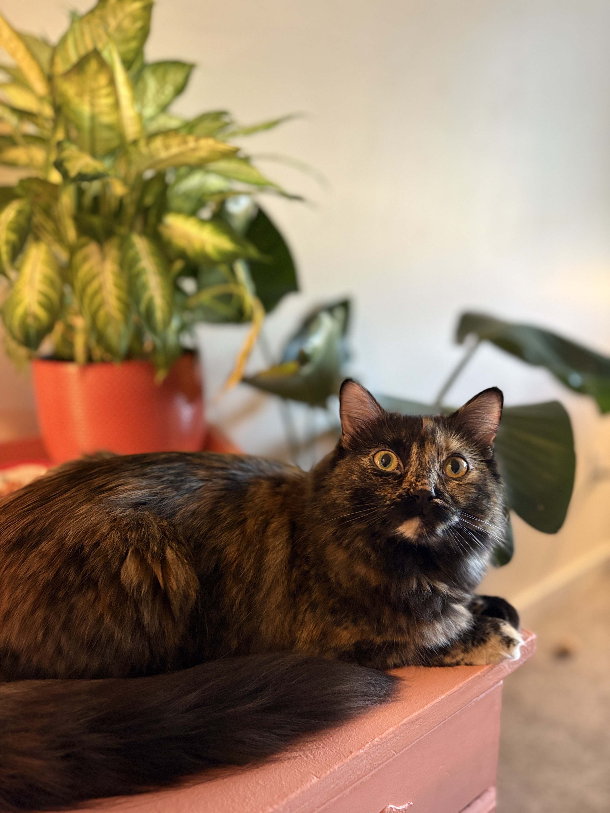
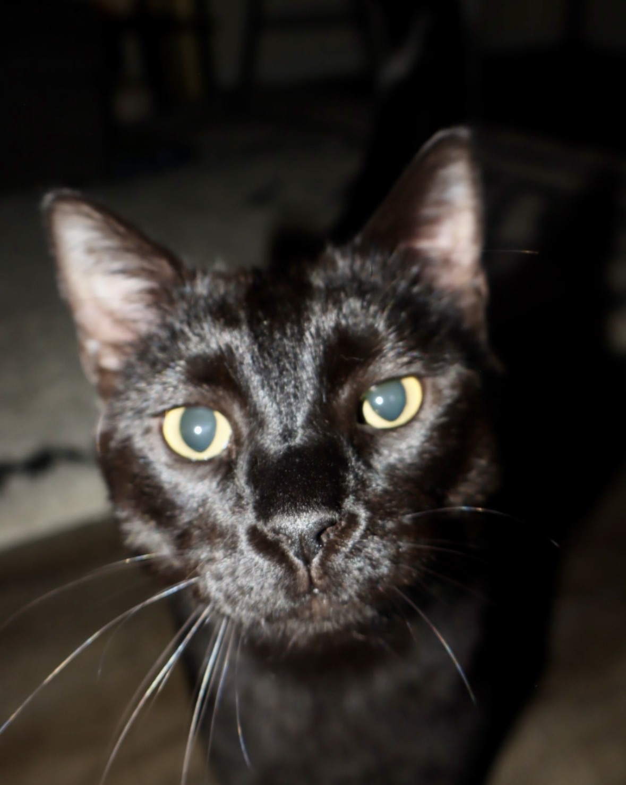

Learn More About Honey, Maple, and Bennie
Every cat has a different personality. This page compares Honey, Maple, and Bennie and includes a small gallery of their favorite moments.
Cat Personality Guide
| Cat | Personality | Favorite Activity |
|---|---|---|
| Honey | Sweet and curious | Sitting somewhere warm |
| Maple | Playful and adventurous | Exploring everything |
| Bennie | Friendly and cuddly | Getting comfortable |
Cat Photo Gallery
A small collection of photos from Honey, Maple, and Bennie.





